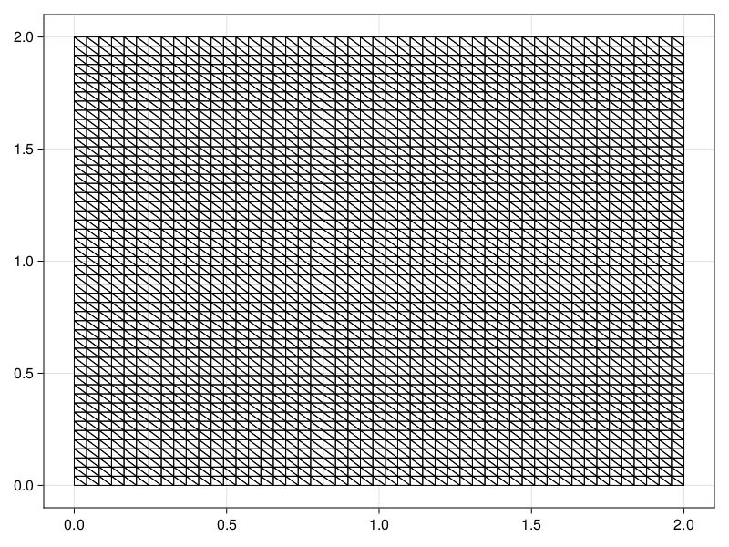
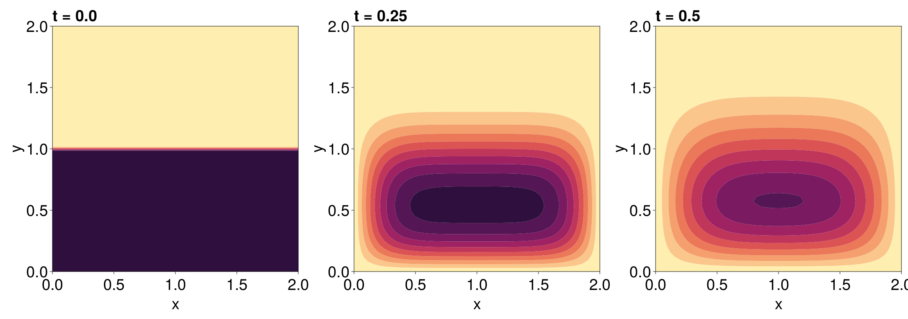

Diffusion Equation on a Square Plate
This tutorial considers a diffusion equation on a square plate:
\[\begin{equation*} \begin{aligned} \pdv{u(\vb x, t)}{t} &= \frac{1}{9}\grad^2 u(\vb x, t) & \vb x \in \Omega,\,t>0, \\[6pt] u(\vb x, t) & = 0 &\vb x \in \partial\Omega,\,t>0,\\[6pt] u(\vb x, 0) &= f(\vb x) & \vb x \in \Omega, \end{aligned} \end{equation*}\]
where $\Omega = [0, 2]^2$ and
\[f(x, y) = \begin{cases} 50 & y \leq 1, \\ 0 & y > 1. \end{cases}\]
To solve this problem, the first step is to define the mesh.
using FiniteVolumeMethod, DelaunayTriangulation
a, b, c, d = 0.0, 2.0, 0.0, 2.0
nx, ny = 50, 50
tri = triangulate_rectangle(a, b, c, d, nx, ny, single_boundary=true)
mesh = FVMGeometry(tri)FVMGeometry with 2500 control volumes, 4802 triangles, and 7301 edgesThis mesh is shown below.
using CairoMakie
fig, ax, sc = triplot(tri)
fig
We now need to define the boundary conditions. We have a homogeneous Dirichlet condition:
bc = (x, y, t, u, p) -> zero(u)
BCs = BoundaryConditions(mesh, bc, Dirichlet)BoundaryConditions with 1 boundary condition with type DirichletWe can now define the actual PDE. We start by defining the initial condition and the diffusion function.
f = (x, y) -> y ≤ 1.0 ? 50.0 : 0.0
initial_condition = [f(x, y) for (x, y) in each_point(tri)]
D = (x, y, t, u, p) -> 1 / 9#7 (generic function with 1 method)We can now define the problem:
final_time = 0.5
prob = FVMProblem(mesh, BCs; diffusion_function=D, initial_condition, final_time)FVMProblem with 2500 nodes and time span (0.0, 0.5)Note that in prob, it is not a diffusion function that is used but instead it is a flux function:
prob.flux_function#65 (generic function with 1 method)When providing diffusion_function, the flux is given by $\vb q(\vb x, t, \alpha,\beta,\gamma) = (-\alpha/9, -\beta/9)^{\mkern-1.5mu\mathsf{T}}$, where $(\alpha, \beta, \gamma)$ defines the approximation to $u$ via $u(x, y) = \alpha x + \beta y + \gamma$ so that $\grad u(\vb x, t) = (\alpha,\beta)^{\mkern-1.5mu\mathsf{T}}$.
To now solve the problem, we simply use solve. When no algorithm is provided, as long as DifferentialEquations is loaded (instead of e.g. OrdinaryDiffEq), the algorithm is chosen automatically. Moreover, note that, in the solve call below, multithreading is enabled by default.
using DifferentialEquations
sol = solve(prob, saveat=0.05)retcode: Success
Interpolation: 1st order linear
t: 11-element Vector{Float64}:
0.0
0.05
0.1
0.15
0.2
0.25
0.3
0.35
0.4
0.45
0.5
u: 11-element Vector{Vector{Float64}}:
[50.0, 50.0, 50.0, 50.0, 50.0, 50.0, 50.0, 50.0, 50.0, 50.0 … 0.0, 0.0, 0.0, 0.0, 0.0, 0.0, 0.0, 0.0, 0.0, 0.0]
[0.0, 0.0, 0.0, 0.0, 0.0, 0.0, 0.0, 0.0, 0.0, 0.0 … 0.0, 0.0, 0.0, 0.0, 0.0, 0.0, 0.0, 0.0, 0.0, 0.0]
[0.0, 0.0, 0.0, 0.0, 0.0, 0.0, 0.0, 0.0, 0.0, 0.0 … 0.0, 0.0, 0.0, 0.0, 0.0, 0.0, 0.0, 0.0, 0.0, 0.0]
[0.0, 0.0, 0.0, 0.0, 0.0, 0.0, 0.0, 0.0, 0.0, 0.0 … 0.0, 0.0, 0.0, 0.0, 0.0, 0.0, 0.0, 0.0, 0.0, 0.0]
[0.0, 0.0, 0.0, 0.0, 0.0, 0.0, 0.0, 0.0, 0.0, 0.0 … 0.0, 0.0, 0.0, 0.0, 0.0, 0.0, 0.0, 0.0, 0.0, 0.0]
[0.0, 0.0, 0.0, 0.0, 0.0, 0.0, 0.0, 0.0, 0.0, 0.0 … 0.0, 0.0, 0.0, 0.0, 0.0, 0.0, 0.0, 0.0, 0.0, 0.0]
[0.0, 0.0, 0.0, 0.0, 0.0, 0.0, 0.0, 0.0, 0.0, 0.0 … 0.0, 0.0, 0.0, 0.0, 0.0, 0.0, 0.0, 0.0, 0.0, 0.0]
[0.0, 0.0, 0.0, 0.0, 0.0, 0.0, 0.0, 0.0, 0.0, 0.0 … 0.0, 0.0, 0.0, 0.0, 0.0, 0.0, 0.0, 0.0, 0.0, 0.0]
[0.0, 0.0, 0.0, 0.0, 0.0, 0.0, 0.0, 0.0, 0.0, 0.0 … 0.0, 0.0, 0.0, 0.0, 0.0, 0.0, 0.0, 0.0, 0.0, 0.0]
[0.0, 0.0, 0.0, 0.0, 0.0, 0.0, 0.0, 0.0, 0.0, 0.0 … 0.0, 0.0, 0.0, 0.0, 0.0, 0.0, 0.0, 0.0, 0.0, 0.0]
[0.0, 0.0, 0.0, 0.0, 0.0, 0.0, 0.0, 0.0, 0.0, 0.0 … 0.0, 0.0, 0.0, 0.0, 0.0, 0.0, 0.0, 0.0, 0.0, 0.0]To visualise the solution, we can use tricontourf! from Makie.jl.
fig = Figure(fontsize=38)
for (i, j) in zip(1:3, (1, 6, 11))
ax = Axis(fig[1, i], width=600, height=600,
xlabel="x", ylabel="y",
title="t = $(sol.t[j])",
titlealign=:left)
tricontourf!(ax, tri, sol.u[j], levels=0:5:50, colormap=:matter)
tightlimits!(ax)
end
resize_to_layout!(fig)
fig
Just the code
An uncommented version of this example is given below. You can view the source code for this file here.
using FiniteVolumeMethod, DelaunayTriangulation
a, b, c, d = 0.0, 2.0, 0.0, 2.0
nx, ny = 50, 50
tri = triangulate_rectangle(a, b, c, d, nx, ny, single_boundary=true)
mesh = FVMGeometry(tri)
using CairoMakie
fig, ax, sc = triplot(tri)
fig
bc = (x, y, t, u, p) -> zero(u)
BCs = BoundaryConditions(mesh, bc, Dirichlet)
f = (x, y) -> y ≤ 1.0 ? 50.0 : 0.0
initial_condition = [f(x, y) for (x, y) in each_point(tri)]
D = (x, y, t, u, p) -> 1 / 9
final_time = 0.5
prob = FVMProblem(mesh, BCs; diffusion_function=D, initial_condition, final_time)
prob.flux_function
using DifferentialEquations
sol = solve(prob, saveat=0.05)
fig = Figure(fontsize=38)
for (i, j) in zip(1:3, (1, 6, 11))
ax = Axis(fig[1, i], width=600, height=600,
xlabel="x", ylabel="y",
title="t = $(sol.t[j])",
titlealign=:left)
tricontourf!(ax, tri, sol.u[j], levels=0:5:50, colormap=:matter)
tightlimits!(ax)
end
resize_to_layout!(fig)
figThis page was generated using Literate.jl.